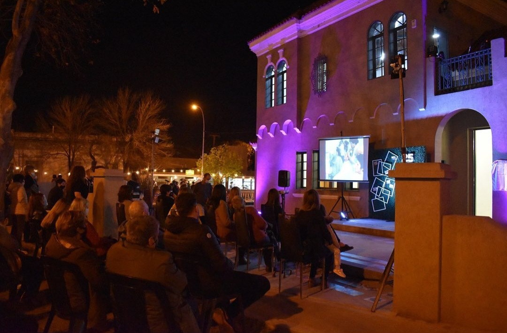
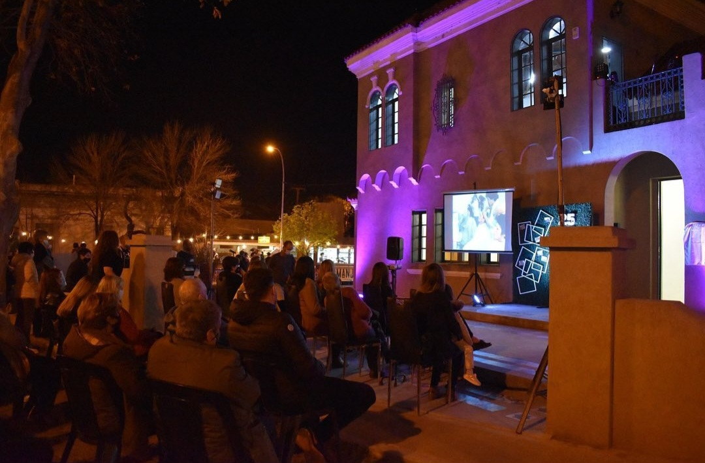
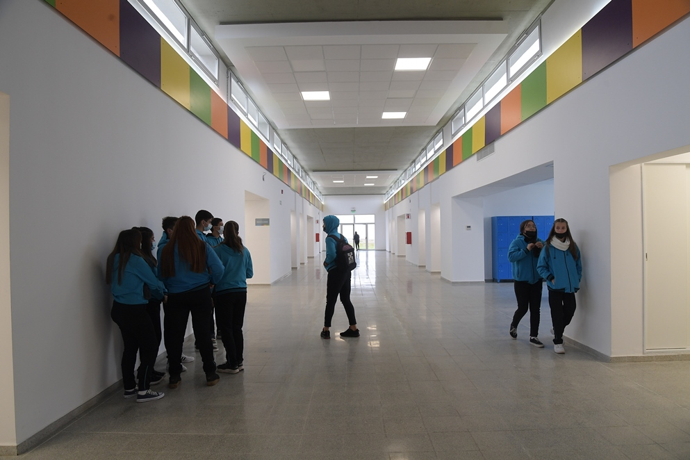
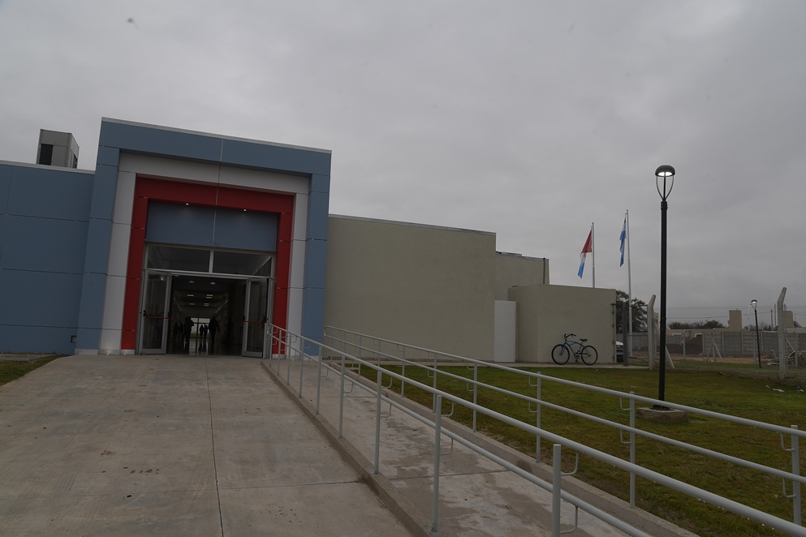
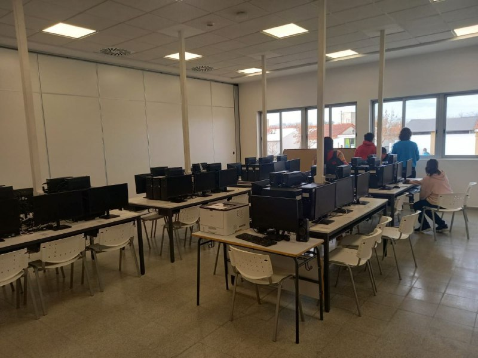
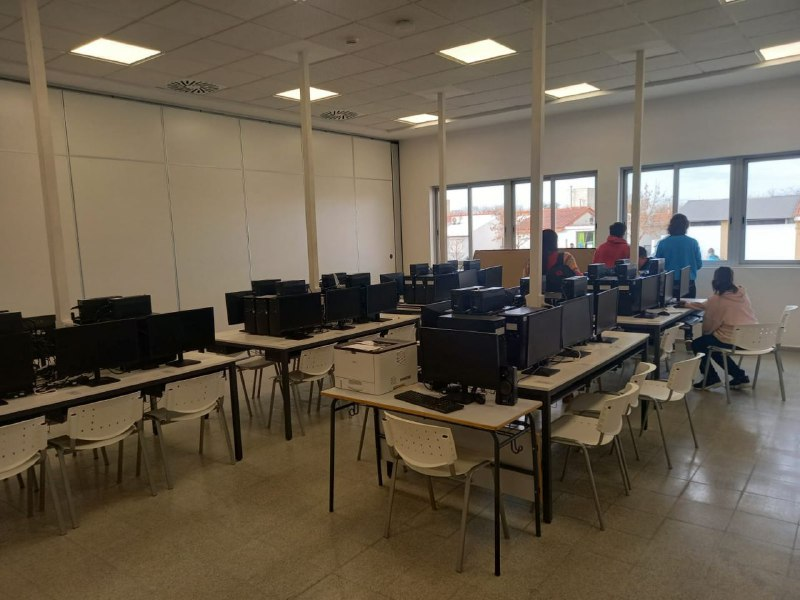
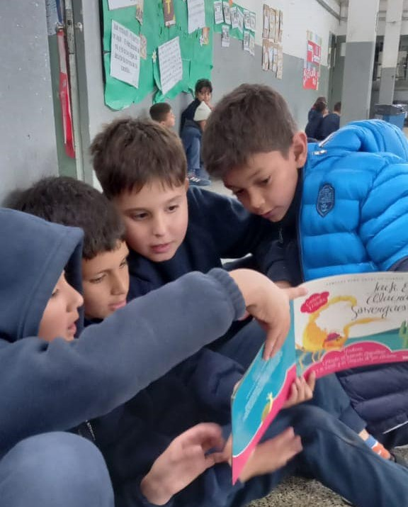
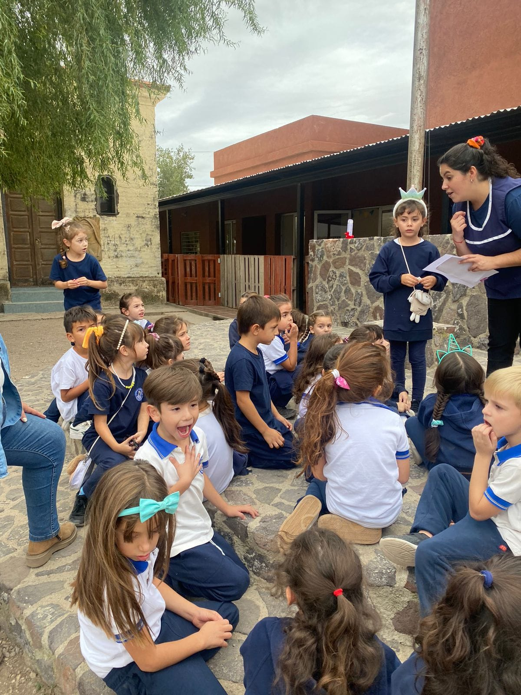
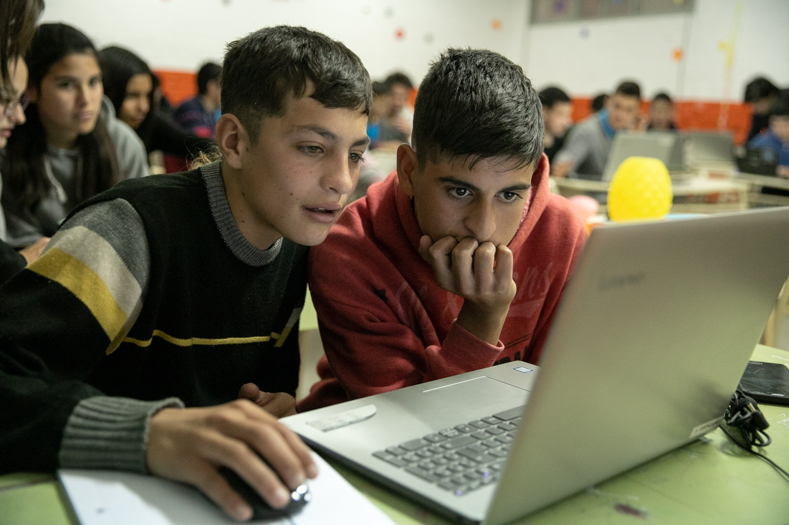
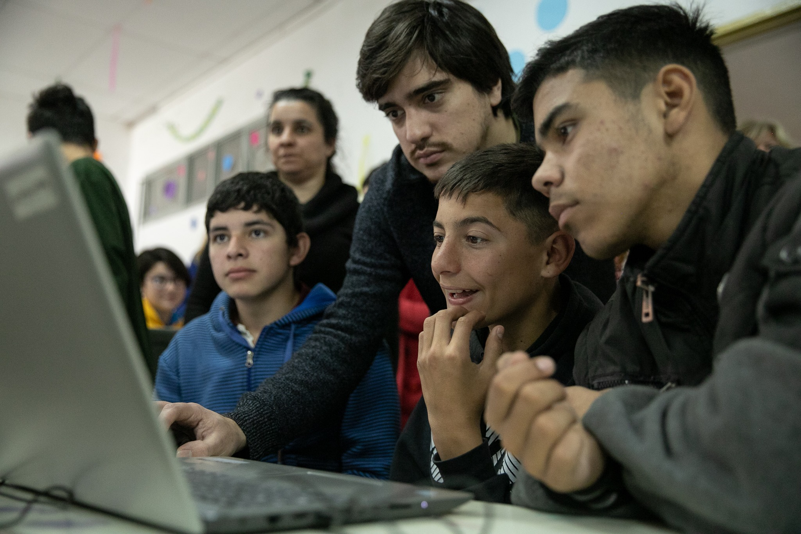

Con el objetivo de promover la cultura de la comunidad y educar, el centro cultural funciona dividido en secciones, cada una de las cuales trabaja sobre disciplinas especificas.
Aqui se encuentra la secretaria de cultura y educacion, el area de deportes y turismo, el espacio de organizacion de eventos y la biblioteca comunitaria.

Las ProA son escuelas modelo en innovación educativa, que forman jóvenes especializados en Desarrollo de Software y en Biotecnología,
saberes claves para el desarrollo productivo de nuestra región.
En jornadas de 8 horas, las y los estudiantes participan en clubes de ciencias, arte, deportes, talleres de inglés aplicado y
clases específicas vinculadas a la especialidad.


La propuesta educativa también incluye tutorías que acercan herramientas personalizadas y acompañan los distintos ritmos de aprendizaje. Además, se realizan todos los años Jornadas de Profundización sobre temáticas de relevancia social, donde chicas y chicos construyen un pensamiento crítico, creativo, colaborativo y responsable con su entorno.
 

La institución enseña a jóvenes a partir de 2019, el edificio se inaguró en el 2022
La institucion fue fundada un 28 de mayo por el padre Manuel Robert. Su vision educadora produció que se lograra realizar la primer escuela secundaria de Despeñaderos
 La institución tiene un recorrido de años con trabajo de personas que se comprometieron en el desafío de educar, evangelizando. Hoy funcionan tres salas de Jardín de Infantes, seis grados de Nivel Primario y nueve cursos de Nivel Secundario. El Equipo de Conducción lo conforman el Cura Párroco, el Representante Legal y los Equipos Directivos de Nivel Inicial y Primario y de Nivel Secundario. El Equipo Docente tiene especial atención en la mejora de la calidad educativa guiados y acompañados por los Equipos Directivos. Los reglamentos de convivencia se basan especialmente en la corrección fraterna y apuntan al mejoramiento y cambio de actitud de la persona. Se trabaja lo pedagógico-curricular desde una metodología constructivista con la intervención del docente para lograr los objetivos, respetando los conocimientos previos y la socialización significativa del conocimiento. Se generan los recursos que den mayores posibilidades de aprendizaje e igualdad de oportunidades. Tecnológicamente, continuamente se va modernizando de acuerdo a los nuevos emprendimientos, explícitamente en el recurso informático. La comunicación institucional es un desafío a trabajar en el proyecto, instrumentalizando acciones concretas para hablar, escuchar, leer y escribir, creciendo en todo lo que implica la comunicación: el discernimiento, el disenso, el consenso y la participación colegiada. Los valores de la comunicación son el respeto por la palabra comprometida, consensuada y trabajada en el buen mensaje.
El IPEM 82 Santiago Penna es una institución educativa de nivel secundario ubicada en la localidad de Despeñaderos, en la provincia de Córdoba, Argentina. La escuela ofrece una formación académica enmarcada en el plan de estudios de la provincia de Córdoba, con orientaciones en Ciencias Naturales, Economía y Gestión de las Organizaciones, y Ciencias Sociales. Además, cuenta con talleres de informática, música, teatro, artes visuales y educación física. El establecimiento cuenta con una amplia variedad de instalaciones, incluyendo aulas equipadas con tecnología de última generación, biblioteca, laboratorios de ciencias, sala de informática, salón de usos múltiples, y patio con canchas deportivas. La comunidad educativa del IPEM 82 Santiago Penna está formada por un equipo docente altamente capacitado y comprometido con brindar una educación de calidad a los estudiantes. La escuela se enfoca en desarrollar habilidades y valores en los alumnos que les permitan enfrentar los desafíos del mundo actual y contribuir al desarrollo de la sociedad.
 